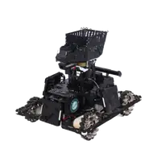
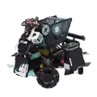
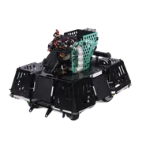

I am a master’s student in Control Science and Engineering at Wuhan University of Science and Technology. I work on resilient control of nonlinear networked systems and embedded robot control.
My research asks how feedback systems can maintain stability and tracking performance when communication is delayed, interrupted, or resource-constrained. I study observer-based control, fuzzy system models, and H∞ performance using Lyapunov analysis and linear matrix inequalities.
Alongside this work, I develop embedded control software for robotic systems. My projects include RoboMaster chassis and gimbal control, and a vision-based waste-sorting prototype built around STM32 and FreeRTOS. I am interested in connecting control-theoretic guarantees with practical robot behavior.
Research opportunities · 2027I am interested in research internships in control and robotics, especially projects involving dynamics, sensing, and embedded implementation. I plan to pursue a PhD in this area. Contact me.
Joint observer, controller, and event-triggering design for nonlinear networked systems exposed to attacks on both communication channels.
Research summary
An attack-dependent adaptive event-triggering mechanism is combined with a non-PDC observer-based controller for T–S fuzzy networked systems. Lyapunov–Krasovskii analysis gives LMI-based sufficient conditions for mean-square asymptotic stability and prescribed H∞ performance under dual-channel denial-of-service attacks. The observer, controller, and triggering parameters are synthesized together.
IJRNC Under review
PD observer-based H∞ tracking control with 𝒟-stability constraints for IT-2 fuzzy systems with measurement delays under dual-channel DoS attacks
He-Xi Liu, Xiao-Heng Chang, Li-Wei Hou
International Journal of Robust and Nonlinear Control · Manuscript under review
A unified synthesis framework for PD observation, H∞ output tracking, and disk-region constraints on frozen closed-loop characteristic roots.
Research summary
This work considers discrete-time interval type-2 T–S fuzzy systems with measurement-output delays and dual-channel DoS attacks. A proportional–difference observer uses delayed measurements received at consecutive sampling instants. LMI conditions jointly synthesize the observer and tracking controller, with mean-square stability and H∞ performance analysis and disk-region constraints for corresponding frozen closed-loop models.
Research experience
PD observer-based H∞ tracking control with 𝒟-stability constraints
Graduate research · Wuhan University of Science and Technology Related manuscript: International Journal of Robust and Nonlinear Control · Under review
Developed a proportional–difference observer and output-tracking controller for discrete-time interval type-2 T–S fuzzy systems with measurement-output delays and dual-channel DoS attacks.
Established an augmented closed-loop model and derived LMI conditions for joint observer/controller synthesis, mean-square asymptotic stability, and prescribed H∞ tracking performance using Lyapunov–Krasovskii analysis and free-weighting matrices.
Incorporated disk-region 𝒟-stability constraints on the characteristic roots of corresponding frozen closed-loop models.
Implemented MATLAB/YALMIP simulations for a spring–mass system and a two-link robotic arm, with Monte Carlo evaluation of tracking and disturbance attenuation and analysis of frozen closed-loop roots.
Resilient event-triggered control of T–S fuzzy networked systems
Graduate research · Wuhan University of Science and Technology
Develop observer-based H∞ control methods for systems affected by DoS attacks, output delays, and limited communication.
Derive stability and performance conditions through Lyapunov–Krasovskii analysis and LMI-based synthesis.
Implement MATLAB/YALMIP experiments to evaluate tracking, disturbance attenuation, and communication performance.
Neural-network-based PID gain tuning for quadrotor UAVs
Undergraduate research · Wuhan University of Science and Technology
Investigated adaptive PID gain tuning using control error and error variation as neural-network inputs. Integrated online gain adjustment into a MATLAB/Simulink quadrotor model and evaluated the controller in simulation under varying operating conditions.
The public repository contains the embedded controller. It includes motor-feedback PID for conveyors, cascaded position/speed control for the sorter, category reception, servo sequencing, distance sensing, display updates, and compression integration. The host-side model and training pipeline are separate.
Demonstration videos
System operation

Robot photo
Gimbal–mecanum-wheel robot
My work: Responsible for control software design, development, and debugging, building on the team’s existing framework.
Mecanum-wheel chassis and yaw/pitch gimbal control within a shared robot framework.
Four-wheel velocity mixing, wheel-speed PID, power limiting, and CAN-based board communication.
The chassis combines four-wheel velocity mixing, motor-feedback PID control, and referee-based power limiting. Yaw/pitch gimbal control uses inertial feedback and CAN motor commands, with CAN links carrying board-to-board control data.
Demonstration videos
MovementSlope climbingShooting

Robot photo
Gimbal–omniwheel robot
My work: Responsible for control software design, development, and debugging, building on the team’s existing framework.
Four-omniwheel chassis and gimbal robot, with inertial sensing and host communication.
Chassis speed mixing, motor-feedback PID, yaw control, pitch motor commands, BMI088 sensing, and USB/PC interfaces.
The control software includes four-wheel velocity mixing, wheel-speed PID, yaw control, pitch motor commands, and BMI088 inertial sensing. USB/PC interfaces support host communication, while CAN carries motor feedback and board-to-board commands.
Demonstration videos
MovementSlope climbingShooting

Robot photo
Gimbal–swerve-drive robot
My work: Responsible for control software design, development, and debugging, building on the team’s existing framework.
Swerve-drive chassis and yaw/pitch gimbal robot, with independent drive-speed and steering-angle control.
The chassis uses four-module drive-speed decomposition, atan2 steering-angle calculation, and cascaded steering control. Gimbal yaw/pitch control and CAN communication integrate motor feedback, motor commands, and board-to-board control data.